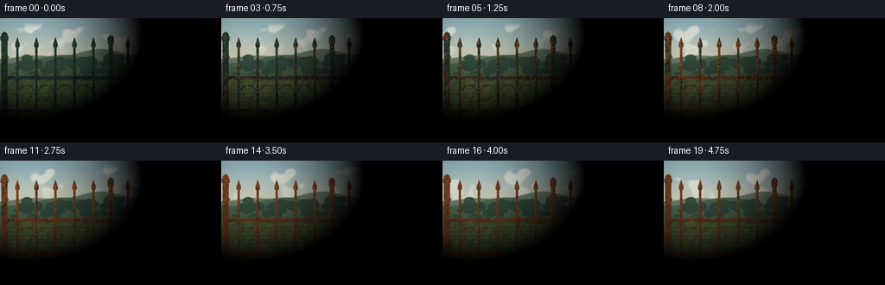
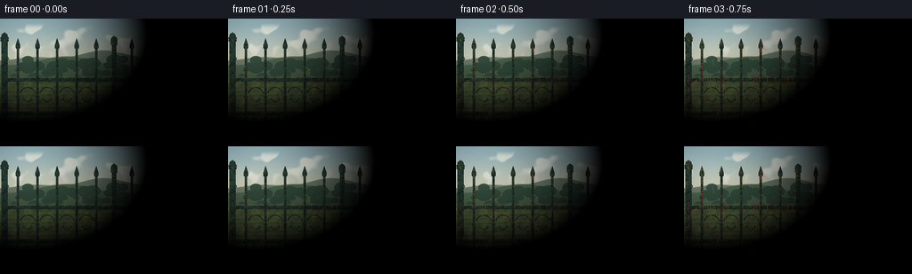

CODING AGENTS AS PIXEL WORLD MODELS
traex/DeepSeek-V4.1-Flash · material_0044
点击播放 · 原生 RGB 像素
此结果可播放，但该运行尚未通过最终提交审核。页面展示不代表评测通过。
逐轮保存的候选
回放视频、检查图与代码变化。
每份候选均可单独播放。实际图片检查记录在下方工具轨迹中。
候选 01播放与检查图
点击播放 · 原生 RGB 像素


展开代码变化
--- 上一保存版本
+++ 本次保存版本
@@ -0,0 +1,444 @@
+from __future__ import annotations
+
+import json
+import math
+from pathlib import Path
+
+import cv2
+import numpy as np
+from PIL import Image, ImageDraw, ImageFilter
+from scipy.ndimage import distance_transform_edt, gaussian_filter
+
+from artifact_io import save
+
+
+CASE_DIR = Path(__file__).resolve().parent
+SPEC = json.loads((CASE_DIR / "task_spec.json").read_text())
+W, H = SPEC["width"], SPEC["height"]
+N, FPS = SPEC["frames"], SPEC["fps"]
+S = 4
+RW, RH = W * S, H * S
+
+
+def clamp01(value):
+ return np.clip(value, 0.0, 1.0)
+
+
+def smoothstep(edge0, edge1, value):
+ x = clamp01((value - edge0) / (edge1 - edge0))
+ return x * x * (3.0 - 2.0 * x)
+
+
+def mix(a, b, amount):
+ amount = np.asarray(amount, dtype=np.float32)
+ if amount.ndim == 2:
+ amount = amount[..., None]
+ return a * (1.0 - amount) + b * amount
+
+
+def color(rgb):
+ return np.asarray(rgb, dtype=np.float32)
+
+
+def normalized_noise(rng, shape, sigma, octaves=1):
+ result = np.zeros(shape, dtype=np.float32)
+ weight_sum = 0.0
+ for octave in range(octaves):
+ scale = 2 ** octave
+ raw = rng.normal(0.0, 1.0, shape).astype(np.float32)
+ blurred = gaussian_filter(raw, sigma=sigma * scale)
+ blurred -= blurred.mean()
+ blurred /= max(float(blurred.std()), 1e-6)
+ result += blurred / scale
+ weight_sum += 1.0 / scale
+ result /= weight_sum
+ return result
+
+
+def draw_layer(draw_fn, mode="L"):
+ image = Image.new(mode, (RW, RH), 0)
+ painter = ImageDraw.Draw(image)
+ draw_fn(painter)
+ return np.asarray(image, dtype=np.float32) / 255.0
+
+
+def scaled_box(x0, y0, x1, y1):
+ return [round(x0 * S), round(y0 * S), round(x1 * S), round(y1 * S)]
+
+
+def scaled_points(points):
+ return [(round(x * S), round(y * S)) for x, y in points]
+
+
+def build_scene_assets():
+ rng = np.random.default_rng(1847)
+
+ def pickets(painter):
+ for x in (20, 42, 64, 86, 108, 148, 170, 192, 214, 236):
+ painter.rectangle(scaled_box(x - 1.25, 33, x + 1.25, 126), fill=255)
+ painter.rectangle(scaled_box(x - 1.25, 32.0, x + 1.25, 34.0), fill=255)
+ painter.ellipse(scaled_box(x - 2.5, 29.5, x + 2.5, 34.5), fill=255)
+ painter.polygon(
+ scaled_points([(x - 2.8, 30.5), (x, 22.0), (x + 2.8, 30.5)]),
+ fill=255,
+ )
+
+ picket_mask = draw_layer(pickets)
+
+ def rails(painter):
+ painter.rectangle(scaled_box(4, 67, 252, 71), fill=255)
+ painter.rectangle(scaled_box(4, 105, 252, 109), fill=255)
+ painter.rectangle(scaled_box(5, 68.5, 251, 69.4), fill=255)
+ painter.rectangle(scaled_box(5, 106.5, 251, 107.4), fill=255)
+
+ rail_mask = draw_layer(rails)
+
+ def posts(painter):
+ for x, width, top, bottom in ((5, 7.0, 24, 130), (128, 5.0, 28, 130), (251, 7.0, 24, 130)):
+ painter.rectangle(scaled_box(x - width / 2, top, x + width / 2, bottom), fill=255)
+ painter.rectangle(scaled_box(x - width / 2 - 1.0, top - 2, x + width / 2 + 1.0, top + 1.5), fill=255)
+ painter.polygon(
+ scaled_points(
+ [
+ (x - width / 2 - 1.5, top - 2),
+ (x, top - 9),
+ (x + width / 2 + 1.5, top - 2),
+ ]
+ ),
+ fill=255,
+ )
+ painter.ellipse(scaled_box(x - 3.5, top - 8, x + 3.5, top - 1), fill=255)
+
+ post_mask = draw_layer(posts)
+
+ def ornaments(painter):
+ for left, right in ((20, 42), (42, 64), (64, 86), (86, 108), (148, 170), (170, 192), (192, 214), (214, 236)):
+ center = (left + right) / 2
+ painter.arc(
+ scaled_box(center - 9.0, 77.0, center + 9.0, 96.0),
+ 195,
+ 345,
+ fill=255,
+ width=max(1, round(1.15 * S)),
+ )
+ painter.arc(
+ scaled_box(center - 5.2, 82.0, center + 5.2, 94.0),
+ 15,
+ 165,
+ fill=255,
+ width=max(1, round(1.0 * S)),
+ )
+ for x in (20, 42, 64, 86, 108, 148, 170, 192, 214, 236):
+ painter.ellipse(scaled_box(x - 2.1, 86.0, x + 2.1, 90.2), outline=255, width=max(1, round(1.0 * S)))
+
+ ornament_mask = draw_layer(ornaments)
+
+ def joints(painter):
+ for x in (20, 42, 64, 86, 108, 148, 170, 192, 214, 236):
+ for y in (68.5, 106.5):
+ painter.ellipse(scaled_box(x - 2.2, y - 2.2, x + 2.2, y + 2.2), fill=255)
+ for x in (5, 128, 251):
+ for y in (68.5, 106.5):
+ painter.ellipse(scaled_box(x - 3.2, y - 3.2, x + 3.2, y + 3.2), fill=255)
+
+ joint_mask = draw_layer(joints)
+
+ metal_mask = np.maximum.reduce([picket_mask, rail_mask, post_mask, ornament_mask, joint_mask])
+ metal_mask = clamp01(metal_mask)
+
+ yy, xx = np.mgrid[0:RH, 0:RW].astype(np.float32)
+ fine = normalized_noise(rng, (RH, RW), 1.0, octaves=2)
+ medium = normalized_noise(rng, (RH, RW), 6.0, octaves=3)
+ broad = normalized_noise(rng, (RH, RW), 22.0, octaves=2)
+ vertical = gaussian_filter(rng.normal(0, 1, (RH, RW)).astype(np.float32), sigma=(18.0, 1.2))
+ vertical -= vertical.mean()
+ vertical /= max(float(vertical.std()), 1e-6)
+ cloud_noise = normalized_noise(rng, (RH, RW), 16.0, octaves=4)
+
+ edge_distance = distance_transform_edt(metal_mask > 0.45)
+ edge = np.exp(-edge_distance / (2.0 * S)).astype(np.float32)
+ joint_field = gaussian_filter(joint_mask, sigma=7.0 * S)
+ joint_field /= max(float(joint_field.max()), 1e-6)
+ ground_field = np.exp(-np.maximum(126.0 * S - yy, 0.0) / (24.0 * S)).astype(np.float32)
+ ground_field[yy < 82 * S] = 0
+
+ exposure = (
+ 0.30 * medium
+ + 0.20 * fine
+ + 0.24 * vertical
+ + 0.18 * broad
+ + 0.60 * joint_field
+ + 0.72 * ground_field
+ + 0.28 * edge
+ )
+ exposure = clamp01(0.52 + 0.30 * exposure)
+
+ mask_gradient_y, mask_gradient_x = np.gradient(gaussian_filter(metal_mask, sigma=1.1 * S))
+ metal_light = 1.0 + 0.58 * mask_gradient_x + 0.30 * mask_gradient_y
+ metal_light -= 0.16 * edge
+ metal_light = np.clip(metal_light, 0.72, 1.35)
+
+ return {
+ "metal": metal_mask,
+ "pickets": picket_mask,
+ "rails": rail_mask,
+ "posts": post_mask,
+ "ornaments": ornament_mask,
+ "joints": joint_mask,
+ "fine": fine,
+ "medium": medium,
+ "broad": broad,
+ "vertical": vertical,
+ "cloud": cloud_noise,
+ "edge": edge,
+ "joint_field": joint_field,
+ "ground_field": ground_field,
+ "exposure": exposure,
+ "light": metal_light,
+ "yy": yy,
+ "xx": xx,
+ }
+
+
+ASSETS = build_scene_assets()
+
+
+def draw_background(frame_index):
+ t = frame_index / (N - 1)
+ assets = ASSETS
+ yy, xx = assets["yy"], assets["xx"]
+ y = yy / S
+ x = xx / S
+
+ weather_phase = frame_index % 10
+ rain_strength = (
+ 0.42 * smoothstep(2.0, 3.2, weather_phase)
+ * (1.0 - smoothstep(4.2, 5.5, weather_phase))
+ + 0.30 * smoothstep(8.0, 9.0, weather_phase)
+ * (1.0 - smoothstep(9.2, 10.0, weather_phase))
+ )
+ rain_strength *= 0.75 + 0.25 * math.sin(t * math.pi * 3.0)
+ light_warmth = 0.12 + 0.12 * math.sin(t * math.pi * 2.2 + 0.5)
+ cloud_amount = 0.48 + 0.16 * math.sin(t * math.pi * 5.0 + 0.8) + 0.22 * rain_strength
+
+ sky_top = color((139, 169, 178)) + light_warmth * color((9, 8, -3))
+ sky_horizon = color((219, 215, 188)) + 0.10 * light_warmth * color((18, 3, -15))
+ sky_blend = smoothstep(0, 58, y)[..., None]
+ sky = mix(sky_top, sky_horizon, sky_blend)
+
+ cloud = assets["cloud"]
+ cloud_shift = int(round((frame_index * 8.0 + 3.0 * math.sin(t * 4.0)) * S))
+ shifted_cloud = np.roll(cloud, cloud_shift, axis=1)
+ cloud_mask = smoothstep(0.16, 0.86, shifted_cloud + cloud_amount - 0.60)
+ cloud_mask *= smoothstep(4.0, 12.0, y) * (1.0 - smoothstep(50.0, 63.0, y))
+ cloud_color = color((229, 230, 217)) + 0.10 * light_warmth * color((10, 2, -8))
+ sky = mix(sky, cloud_color, cloud_mask * 0.72)
+
+ horizon_glow = np.exp(-((y - 48.0) / 8.0) ** 2) * (0.07 + 0.05 * light_warmth)
+ sky += horizon_glow[..., None] * color((25, 19, 8))
+
+ image = sky.copy()
+
+ hill_color_far = color((111, 128, 111)) + 0.06 * light_warmth * color((16, 8, -2))
+ hill_color_near = color((77, 101, 78)) + 0.05 * light_warmth * color((15, 8, -4))
+ hill_far = 42.0 + 4.0 * np.sin(x / 31.0 + 0.9) + 2.3 * np.sin(x / 13.0 + 2.1)
+ hill_near = 50.0 + 5.0 * np.sin(x / 38.0 + 2.8) + 2.5 * np.sin(x / 17.0 + 0.3)
+ image = mix(image, hill_color_far, smoothstep(hill_far - 0.8, hill_far + 0.8, y))
+ image = mix(image, hill_color_near, smoothstep(hill_near - 0.8, hill_near + 0.8, y))
+
+ # A soft, distant treeline gives the fence a believable outdoor setting.
+ tree_rng = np.random.default_rng(721)
+ tree_layer = Image.new("L", (RW, RH), 0)
+ tree_draw = ImageDraw.Draw(tree_layer)
+ for i in range(75):
+ tx = float(tree_rng.uniform(0, 256))
+ ty = float(tree_rng.uniform(45, 71))
+ radius = float(tree_rng.uniform(3.0, 9.0))
+ tree_draw.ellipse(scaled_box(tx - radius, ty - radius * 0.72, tx + radius, ty + radius * 0.72), fill=255)
+ tree_mask = np.asarray(tree_layer, dtype=np.float32) / 255.0
+ tree_mask *= 1.0 - smoothstep(71.0, 78.0, y)
+ tree_color = color((48, 73, 58)) + 0.035 * light_warmth * color((8, 6, -8))
+ image = mix(image, tree_color, tree_mask * 0.88)
+
+ # Field with horizontal bands, muted by distance and animated subtly by seasons.
+ field_base = mix(color((73, 96, 58)), color((119, 117, 69)), 0.28 + 0.10 * math.sin(t * math.pi * 1.7))
+ field_texture = 0.5 + 0.5 * assets["medium"]
+ field = field_base + (field_texture[..., None] - 0.5) * color((20, 25, 11))
+ field_band = 0.5 + 0.5 * np.sin(y * 1.35 + x * 0.018)
+ field *= (0.90 + 0.13 * field_band[..., None])
+ field_y = smoothstep(62.0, 69.0, y)
+ image = mix(image, field, field_y)
+
+ ground_top = 119.0 + 1.4 * np.sin(x / 24.0 + 0.4)
+ soil = mix(color((55, 57, 36)), color((94, 82, 49)), 0.34 + 0.18 * field_texture)
+ soil += (assets["fine"][..., None] - 0.5) * color((16, 13, 8))
+ image = mix(image, soil, smoothstep(ground_top - 1.0, ground_top + 1.2, y))
+
+ # Wet grass and a few low weeds around the base.
+ grass_layer = Image.new("RGBA", (RW, RH), (0, 0, 0, 0))
+ grass_draw = ImageDraw.Draw(grass_layer)
+ grass_rng = np.random.default_rng(913)
+ for _ in range(210):
+ gx = float(grass_rng.uniform(0, 256))
+ gy = float(grass_rng.uniform(120, 143))
+ length = float(grass_rng.uniform(2.0, 8.0))
+ lean = float(grass_rng.uniform(-2.2, 3.2))
+ green = (
+ int(50 + grass_rng.uniform(0, 28)),
+ int(83 + grass_rng.uniform(0, 34)),
+ int(42 + grass_rng.uniform(0, 22)),
+ int(125 + grass_rng.uniform(0, 80)),
+ )
+ grass_draw.line(
+ [(round(gx * S), round(gy * S)), (round((gx + lean) * S), round((gy - length) * S))],
+ fill=green,
+ width=max(1, round(0.55 * S)),
+ )
+ grass = np.asarray(grass_layer, dtype=np.float32) / 255.0
+ image = image * (1.0 - grass[..., 3:4]) + grass[..., :3] * 255.0 * grass[..., 3:4]
+
+ # Fence shadows on the ground, cast to the right by a low sun.
+ shadow_layer = Image.new("RGBA", (RW, RH), (0, 0, 0, 0))
+ shadow_draw = ImageDraw.Draw(shadow_layer)
+ for px in (20, 42, 64, 86, 108, 148, 170, 192, 214, 236):
+ shadow_draw.line(
+ [(round(px * S), round(125 * S)), (round((px + 11) * S), round(139 * S))],
+ fill=(20, 25, 15, 50),
+ width=max(1, round(1.0 * S)),
+ )
+ shadow = np.asarray(shadow_layer, dtype=np.float32) / 255.0
+ image = image * (1.0 - shadow[..., 3:4] * 0.78) + shadow[..., :3] * 255.0 * shadow[..., 3:4] * 0.78
+
+ # Rain is sparse enough to read as weather, not a screen effect.
+ if rain_strength > 0.03:
+ rain_layer = Image.new("RGBA", (RW, RH), (0, 0, 0, 0))
+ rain_draw = ImageDraw.Draw(rain_layer)
+ rain_rng = np.random.default_rng(4900 + frame_index)
+ count = int(150 * rain_strength)
+ for _ in range(count):
+ rx = float(rain_rng.uniform(0, 256))
+ ry = float(rain_rng.uniform(0, 144))
+ length = float(rain_rng.uniform(3.0, 9.0))
+ alpha = int(rain_rng.uniform(28, 80) * min(1.0, rain_strength * 2.2))
+ rain_draw.line(
+ [(round(rx * S), round(ry * S)), (round((rx + 1.5) * S), round((ry + length) * S))],
+ fill=(196, 211, 210, alpha),
+ width=max(1, round(0.5 * S)),
+ )
+ rain = np.asarray(rain_layer, dtype=np.float32) / 255.0
+ image = image * (1.0 - rain[..., 3:4]) + rain[..., :3] * 255.0 * rain[..., 3:4]
+
+ haze = (0.025 + 0.05 * rain_strength) * smoothstep(20.0, 110.0, y)
+ image = mix(image, color((183, 192, 178)), haze)
+ return np.clip(image, 0, 255)
+
+
+def render_metal(frame_index, background):
+ assets = ASSETS
+ t = frame_index / (N - 1)
+ metal = assets["metal"]
+ yy = assets["yy"]
+ exposure = assets["exposure"]
+ fine = assets["fine"]
+ medium = assets["medium"]
+ vertical = assets["vertical"]
+ broad = assets["broad"]
+
+ # Rust begins at joints and the soil line, then advances upward and along the bars.
+ progress = 0.055 + 0.91 * (t ** 0.86)
+ local = progress + 0.30 * (exposure - 0.50) + 0.13 * (vertical - 0.15) + 0.09 * (fine - 0.25)
+ rust_amount = smoothstep(0.25, 0.58, local)
+ rust_amount *= 0.82 + 0.18 * smoothstep(0.0, 0.15, t)
+ rust_amount = clamp01(rust_amount)
+
+ # Paint first dulls, then breaks into crisp chips with dark exposed iron beneath.
+ chip_noise = 0.62 * fine + 0.38 * medium
+ chip = smoothstep(0.46, 0.76, 0.20 + 0.63 * t + 0.34 * (chip_noise - 0.48) + 0.20 * assets["joint_field"])
+ chip = clamp01(chip)
+
+ paint_age = smoothstep(0.0, 1.0, t)
+ paint_base = mix(color((47, 76, 65)), color((44, 58, 49)), paint_age)
+ paint_variation = 0.72 + 0.22 * (medium * 0.5 + 0.5)
+ paint = paint_base[None, None, :] * paint_variation[..., None]
+ paint += (fine[..., None] - 0.5) * color((10, 13, 10))
+
+ rust_tone = clamp01(0.52 + 0.24 * medium + 0.14 * fine + 0.10 * broad)
+ rust_dark = color((62, 34, 24))
+ rust_mid = color((139, 70, 34))
+ rust_bright = color((196, 104, 48))
+ rust = mix(rust_dark, rust_mid, rust_tone)
+ rust = mix(rust, rust_bright, clamp01(0.22 + 0.24 * fine + 0.20 * assets["edge"]))
+
+ # Bright orange flecks and deep pitting break up the rust color at close range.
+ speck = smoothstep(1.0, 1.8, fine) * smoothstep(0.18, 0.55, t)
+ pit = smoothstep(1.1, 1.8, medium) * smoothstep(0.28, 0.80, t)
+ rust = mix(rust, color((211, 122, 55)), 0.55 * speck)
+ rust = mix(rust, color((40, 28, 23)), 0.58 * pit)
+
+ bare_iron = color((39, 42, 39)) + (fine[..., None] - 0.5) * color((12, 12, 12))
+ surface = mix(paint, rust, rust_amount)
+ surface = mix(surface, bare_iron, chip * 0.52 * (1.0 - 0.45 * rust_amount))
+
+ light = assets["light"]
+ surface *= light[..., None]
+ edge_glint = clamp01(assets["edge"] * (0.35 + 0.65 * clamp01(assets["light"] - 0.8) / 0.55))
+ surface += edge_glint[..., None] * color((19, 16, 12))
+ surface = np.clip(surface, 0, 255)
+
+ # Restrict all material work to the fence silhouette.
+ out = background.copy()
+ mask = metal[..., None]
+ out = out * (1.0 - mask) + surface * mask
+
+ # Small rust-colored stains creep down from wet joints.
+ stain_source = np.roll(assets["joints"], 6 * S, axis=0) * (yy > 69 * S) * (yy < 126 * S)
+ stain_source = gaussian_filter(stain_source, sigma=(9.0 * S, 1.0 * S))
+ stain = clamp01(stain_source * (0.20 + 0.65 * t) * (0.55 + 0.45 * vertical))
+ stain *= (1.0 - metal) * (yy < 127 * S)
+ out = mix(out, color((139, 69, 35)), stain * 0.36)
+ return np.clip(out, 0, 255)
+
+
+def render_frame(frame_index):
+ background = draw_background(frame_index)
+ image = render_metal(frame_index, background)
+
+ # Gentle vignette and a restrained film-like finish.
+ yy = ASSETS["yy"] / H
+ xx = ASSETS["xx"] / W
+ vignette = 1.0 - 0.11 * (((xx - 0.5) * 1.45) ** 2 + ((yy - 0.5) * 1.1) ** 2)
+ image *= vignette[..., None]
+
+ rng = np.random.default_rng(500 + frame_index)
+ grain = rng.normal(0.0, 1.0, (RH, RW, 1)).astype(np.float32)
+ image += grain * 1.15
+ image = np.clip(image, 0, 255).astype(np.uint8)
+ small = Image.fromarray(image, "RGB").resize((W, H), Image.Resampling.LANCZOS)
+ return np.asarray(small, dtype=np.uint8)
+
+
+def main():
+ frames = np.stack([render_frame(i) for i in range(N)], axis=0)
+ assert frames.shape == (N, H, W, 3), frames.shape
+ assert frames.dtype == np.uint8
+
+ save(frames, CASE_DIR)
+
+ # An MP4 is convenient for players that do not use the HTML artifact.
+ video_path = CASE_DIR / "video.mp4"
+ writer = cv2.VideoWriter(
+ str(video_path),
+ cv2.VideoWriter_fourcc(*"mp4v"),
+ FPS,
+ (W, H),
+ )
+ if not writer.isOpened():
+ raise RuntimeError("Could not open MP4 writer")
+ for frame in frames:
+ writer.write(cv2.cvtColor(frame, cv2.COLOR_RGB2BGR))
+ writer.release()
+ print(f"wrote {N} frames, {video_path.name}, and HTML player to {CASE_DIR}")
+
+
+if __name__ == "__main__":
+ main()
可观测工具轨迹
实际执行的命令与返回图片。
命令 1exit 0
/bin/bash -c "pwd && rg --files -g 'prompt.txt' -g 'GENERATION_RULES.md' -g 'task_spec.json' -g '"'!*.mp4'"' -g '"'!*.mov'"'"
命令 2exit 0
/bin/bash -c 'ls -la'
命令 3exit 0
/bin/bash -c 'cat GENERATION_RULES.md'
命令 4exit 0
/bin/bash -c "cat task_spec.json && printf '\\n--- PROMPT ---\\n' && cat prompt.txt"
命令 5exit 0
/bin/bash -c "sed -n '1,260p' artifact_io.py"
命令 6exit 0
/bin/bash -c "sed -n '1,260p' player_template.html"
命令 7exit 0
/bin/bash -c "find .tmp -maxdepth 2 -type f -printf '%p %s bytes\\n' | head -50"
命令 8exit 0
/bin/bash -c "python - <<'PY'
import numpy, PIL
print('numpy', numpy.__version__)
print('PIL', PIL.__version__)
PY"命令 9exit 0
/bin/bash -c 'command -v ffmpeg || true; command -v chafa || true; command -v magick || true; command -v convert || true'
命令 10exit 0
/bin/bash -c "python - <<'PY' for m in ['scipy','cv2','imageio','skimage']: try: x=__import__(m); print(m, getattr(x,'__version__','ok')) except Exception as e: print(m,'missing') PY"
命令 11exit 0
/bin/bash -c 'python generate.py'
命令 12exit 0
/bin/bash -c "python - <<'PY'
from PIL import Image
import numpy as np
for n in (0,5,10,15,19):
a=np.asarray(Image.open(f'frames/{n:02d}.png').convert('RGB'),dtype=np.float32)
print(n, 'mean',a.mean((0,1)).round(1),'std',a.std((0,1)).round(1),'minmax',a.min(),a.max())
PY"命令 13exit 0
/bin/bash -c "python - <<'PY'
from PIL import Image
im=Image.open('inspection.png')
print(im.size)
im.resize((im.width*2,im.height*2)).save('.tmp/inspection2x.png')
PY"命令 14exit 0
/bin/bash -c "python - <<'PY'
from PIL import Image
import numpy as np
im=np.asarray(Image.open('frames/00.png').convert('RGB'))
chars=' .:-=+*#%@'
for y in range(0,144,4):
row=''
for x in range(0,256,3):
p=im[y:y+4,x:x+3].mean()
row+=chars[min(9,int(p/256*10))]
print(row)
print('pixels',im[0,0],im[40,40],im[100,10],im[130,100])
PY"命令 15exit 0
/bin/bash -c "python - <<'PY'
from PIL import Image
import numpy as np
a=np.asarray(Image.open('frames/00.png').convert('RGB'))
for y in [0,20,50,80,100,120,140]:
print('y',y,[(x,tuple(a[y,x])) for x in [0,50,100,120,125,126,127,128,130,150,180,200,220,240,255]])
PY"命令 16exit 0
/bin/bash -c "python - <<'PY'
from PIL import Image
import numpy as np
for name in ['frames/00.png','frames/19.png']:
a=np.asarray(Image.open(name).convert('RGB'))
print(name)
for y in range(10,140,10):
print(y, a[y,10:250:15].mean(0).round().astype(int).tolist())
PY"命令 17exit 0
/bin/bash -c "python - <<'PY' import cv2 print(cv2.VideoWriter_fourcc(*'mp4v')) PY"
命令 18exit 0
/bin/bash -c "python - <<'PY'
import numpy as np
from PIL import Image
for idx in [0,10,19]:
a=np.asarray(Image.open(f'frames/{idx:02d}.png').convert('RGB')).astype(float)
print(idx)
for box in [(0,0,256,70),(0,70,256,119),(0,119,256,144),(15,30,30,120),(35,30,50,120),(140,30,155,120)]:
x0,y0,x1,y1=box; b=a[y0:y1,x0:x1]
print(box, 'mean', b.mean((0,1)).round(1), 'std',b.std((0,1)).round(1), 'range',b.min(),b.max())
PY"命令 19exit 0
/bin/bash -c "python - <<'PY'
import generate as g
import numpy as np
from PIL import Image
a=g.draw_background(0)
print('bg',a.min(),a.max(),a.mean((0,1)))
for y in [60,70,90,110,120,130,140]: print(y,a[y,10],a[y,100],a[y,200])
im=Image.fromarray(np.clip(a,0,255).astype('uint8'))
im.save('.tmp/bg.png')
PY"保存候选 1 份；完成命令 19 次；可验证图片返回 0 张。原始 API 响应与完整日志保留在本地。